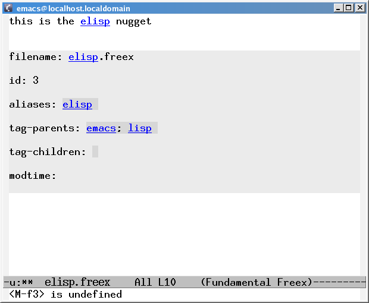

[This is a moderately techical tutorial that also shows you some of the backend. We're working on a more user-level tutorial.
The first thing to do is to download and install Freex.
Assuming that's all working, the next step is to create a new .freex file. As soon as you save this, freex will automatically create and initialize your database.
To do this, just open up a new file in your data directory - let's call it 'emacs.freex'. Type in some text like:
"emacs outshines all other editing software in approximately the same way that the noonday sun does the stars. It is not just bigger and brighter; it simply makes everything else vanish". — Neal Stephenson
Now, save it. Congratulations - you just added your first nugget to the database. To test this, try typing 'emacs', or just editing the line above that contains the word 'emacs'. You should see it now highlighted with a link. Try putting the cursor over 'emacs' and pressing ENTER... nothing happens. That's because you just followed a link right back to where you already were.
Time to create another nugget. Let's call it 'lisp.freex'. Fill it with some text, e.g.:
A girl goes to the doctor to have her cold treated. The doctor lifts up her top to listen to her chest and says, "nice big breaths."
The girl replies, "Yeth, and I'm only 14!"
Notice that if you type 'emacs' now, place the cursor on it, and press ENTER, you will be magically transported to the 'emacs' nugget.
[We use the term 'nugget' throughout to mean 'document' or 'piece of text', since nuggets will not always equate to files. More on this later.]
So now we have two nuggets. Let's examine a little what's going on behind the scenes before we carry on. Peek at your data directory. You should see something like this:
66 budokan:.../freex/testdocs>ll total 32K drwxrwxr-x 12 greg greg 4.0K 2007-09-19 05:03 .. -rw-rw-r-- 1 greg greg 17 2007-09-19 05:04 emacs.freex -rw-rw-r-- 1 greg greg 8 2007-09-19 05:04 lisp.freex -rw-r--r-- 1 greg greg 11K 2007-09-19 05:04 freex.db drwxrwxr-x 3 greg greg 4.0K 2007-09-19 05:11 .
As you'd expect, both of the .freex files are plain ascii text, containing whatever you typed. The real magic is hidden inside freex.db. Fire up sqlite (by typing 'sqlite' or maybe 'sqlite3') so that we can peer inside it:
62 budokan:.../freex/testdocs>sqlite freex.db SQLite version 3.3.13 Enter ".help" for instructions
and enter the following query:
select * from nuggets;
This is a very simple SQL query that's asking the database to tell us everything it knows about the nuggets in our database. It reports back:
1| emacs outshines all other [snip] |2007-09-19 05:03:53.410275|emacs.freex 2| A girl goes to the doctor [snip] |2007-09-19 05:04:36.098915|lisp.freex
As you can probably guess, this tells us that:
If you're curious, you can inspect the database further. To see the full schema:
select * from sqlite_master;
Definitely worth a muse, but beyond the scope of this document.
Just for completeness, let's take a quick spin in python, which provides the backend interface to the database to emacs, before we jump back into the driver's seat. Fire up a python or ipython shell, and try something like this:
from freex_sqlalchemy import *
fsqa = create_fsqa('/home/greg/docs/freex/freex.db',False,file_ext='freex')
'freex_sqlalchemy.py' contains all the backend python database code, and provides the API that emacs uses for getting and setting nuggets. The three arguments to 'create_fsqa' tell it:
Now, we can start to query the database:
In [2]: get_all_aliases() Out[2]: ['emacs', 'python']
Ok. Enough infrastructure. Let's play some more. Open Emacs up again. Create a new .freex file called 'elisp.freex'. Now, we want to represent the fact that 'elisp' belongs to both 'emacs' and 'lisp'. If 'emacs' and 'lisp' were directories, this would be like saying that we wanted 'elisp' to exist in both.
This is easy to do. Just run M-x freex-meta-insert-metadata-here (C-cm), and you should see a grey metadata overlay appear in the midst of your text. It tells you a bunch of things you already know, but the fun part is that it got all this by querying the database, and if you edit the fields, you'll be able to transparently update the database. Just place your cursor inside the small darker grey box to the right of 'tag-parents', and type:
emacs; lisp
In other words, the tag-parents line should look like this:

Now, save as normal, and then press C-cm again. You should find that the modtime field has updated, indicating that the data has been written to the database. [You can banish the metadata overlay with M-x freex-embed-remove-overlay-at-point (C--).]
Let's test this out. If 'elisp' belongs to 'emacs', then that means that 'emacs' owns (is the parent of) 'elisp', right? Open up 'emacs', and look at its metadata. You should see that its tag-children contains 'elisp' now.
Play around with this. Let's try adding a tag-parent for a nugget that doesn't exist yet. Make 'lisp' belong to 'programming'. Voila! You should now have a 'programming.freex'. Before we go any further, make sure that you've set things up so that:
For the final part of the tutorial, I'm going to try and demonstrate a pretty meaty idea, so saddle up your mind.
Imagine you have a bunch of nuggets, each with various tag-parents, and you want to find a nugget. Maybe you want to find the nugget for the Emacs programming language, but you've forgotten what it's called. Try M-x freex-meta-find (C-cm). Type 'programming/emacs/' and then hit TAB. In fact, you could have tab-completed multiple times as you were typing those, just as with files. Every time you hit TAB, you're actually querying the database. Think of the '/' as denoting 'has tag-parent'. That query is asking "which nuggets have both 'emacs' and 'programming' as tag-parents?" With any luck, it should tab-complete to 'elisp'. Hit ENTER to open it up. That's the easiest way to open up (or even create) freex nuggets.
Now wait just one darn cotton-picking minute. We specified that 'elisp' belongs to both 'emacs' and 'lisp'. And we specified that 'lisp' belongs to 'programming'. But we never specified that 'elisp' belongs to 'programming'. So how did it know. Basically, freex-meta-find allows for second-order parenting relationships. Almost as though grandparents (though currently not great-grandparents) count as honorary parents. This makes for a pretty powerful system, because it means that you don't have to have so much redundancy in your tagging. Anything that has 'lisp' as a tag-parent will also have 'programming' as a parent, for free.
That's plenty of tutoring for now. Play around with creating links, tag-parents and tag-children, and with freex-meta-find. Peek at the database as you go, just to get a better idea of what's going on.